
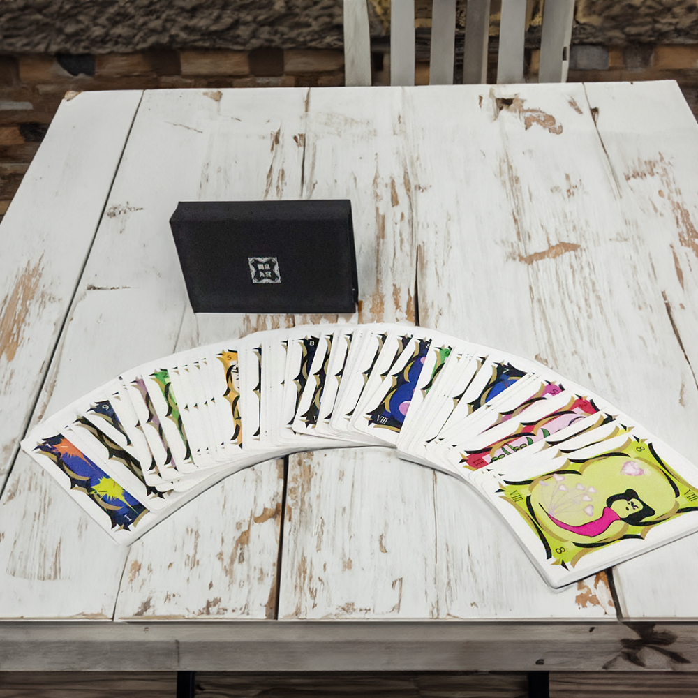
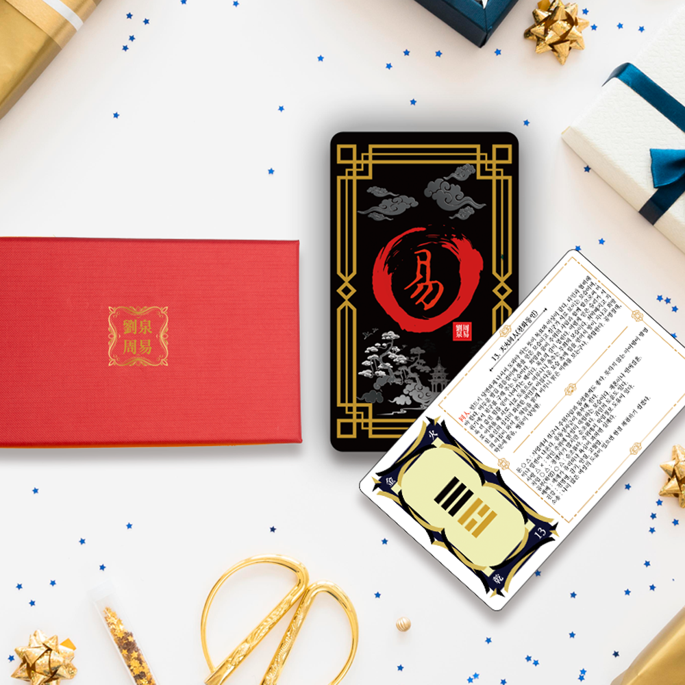
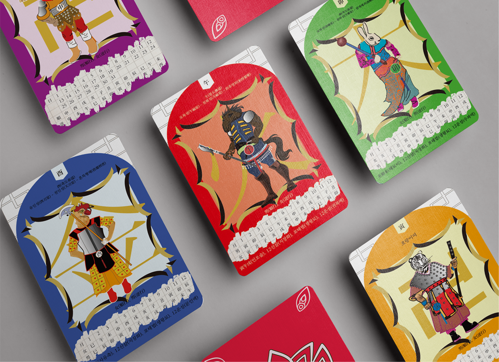
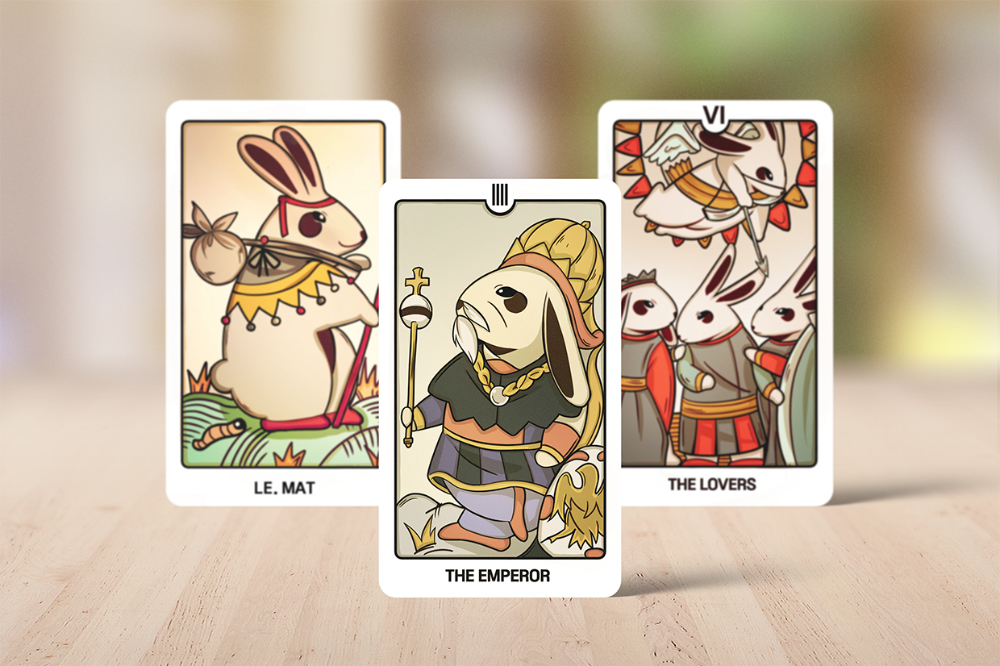

01
오로라컬러카드
색채 심리와 감정을 연결한 셀프 리딩 카드. 직관적인 컬러 시스템과 모바일 콘텐츠를 하나의 경험으로 설계했습니다.
CONTENTS · CARD DESIGN · DETAIL PAGEPSYCHOLOGY · SYMBOL · STORY
오로라닉은 심리 콘텐츠와 타로카드의 기획부터 카드 디자인, AI 이미지, 상세페이지와 웹페이지까지 하나의 이야기로 완성합니다.
01 / ABOUT
한 장의 카드에는 질문과 상징, 감정과 경험이 함께 담깁니다. 오로라닉은 복잡한 심리·철학 콘텐츠를 누구나 보고, 만지고, 사용할 수 있는 시각 언어로 바꿉니다.
전통의 상징성과 현대적 감각을 연결해 제품의 콘셉트부터 구매 경험까지 일관된 브랜드 세계를 설계합니다.
02 / SELECTED WORK
상징 해석, 콘텐츠 구조, 일러스트레이션과 패키지까지 프로젝트마다 고유한 사용 경험을 설계했습니다.






03 / SERVICES
각 단계가 따로 놀지 않도록 콘텐츠, 제품과 판매 화면을 하나의 언어로 연결합니다.
심리·철학·상징 자료를 분석하고 카드의 목적, 사용자와 리딩 구조를 설계합니다.
카드 규격, 정보 구조, 일러스트와 패키지를 실제 제작 사양에 맞춰 완성합니다.
브랜드 콘셉트에 맞는 비주얼과 제품 연출 이미지를 제작해 세계관을 확장합니다.
제품의 장점과 사용법을 구매자가 자연스럽게 이해하도록 설득력 있는 흐름을 만듭니다.
04 / PROCESS
목표와 고객, 콘텐츠 자료를 확인합니다.
핵심 콘셉트와 카드 구조를 설계합니다.
시각 언어와 샘플을 개발하고 조율합니다.
카드, 이미지와 판매 콘텐츠를 완성합니다.
START YOUR PROJECT
아이디어만 있어도 괜찮습니다. 오로라닉이 질문부터 함께 정리해 드립니다.